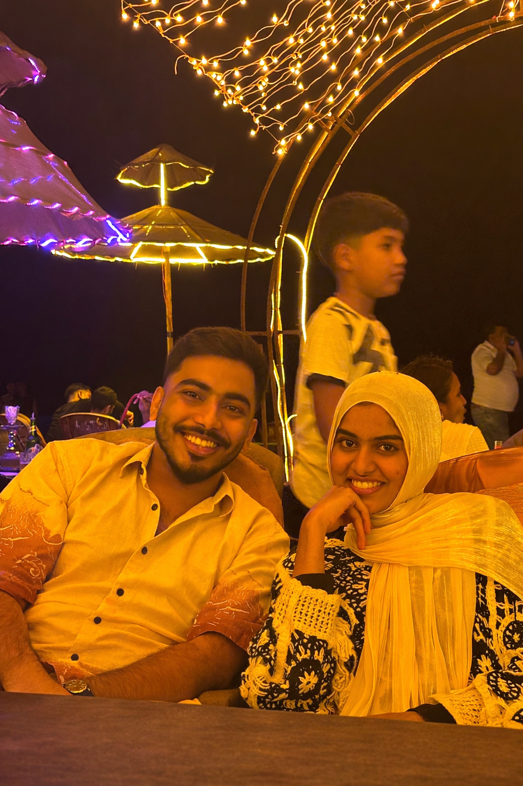
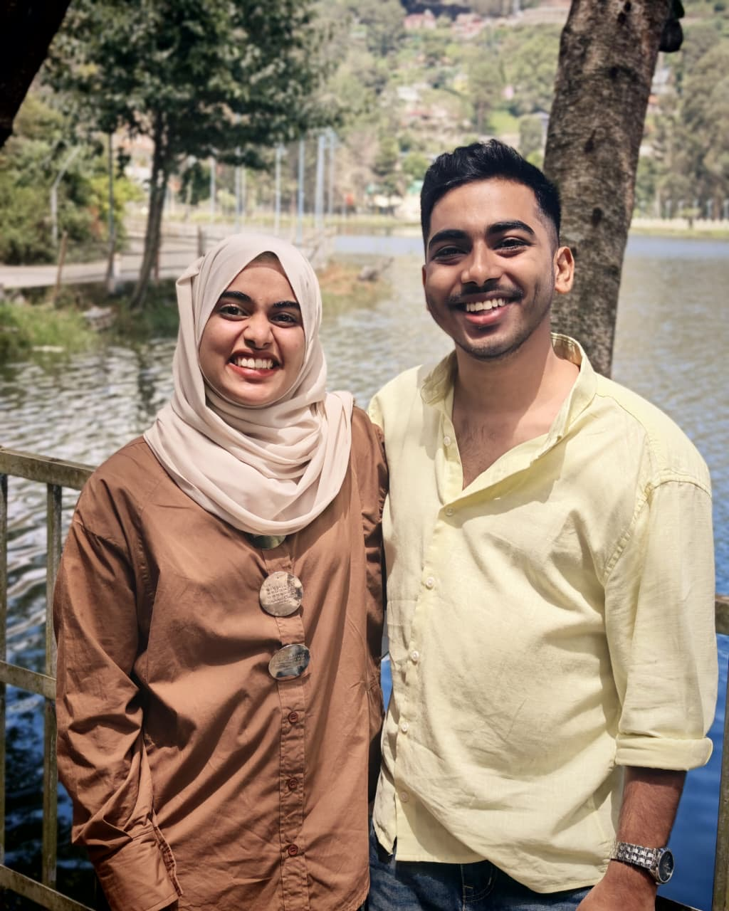
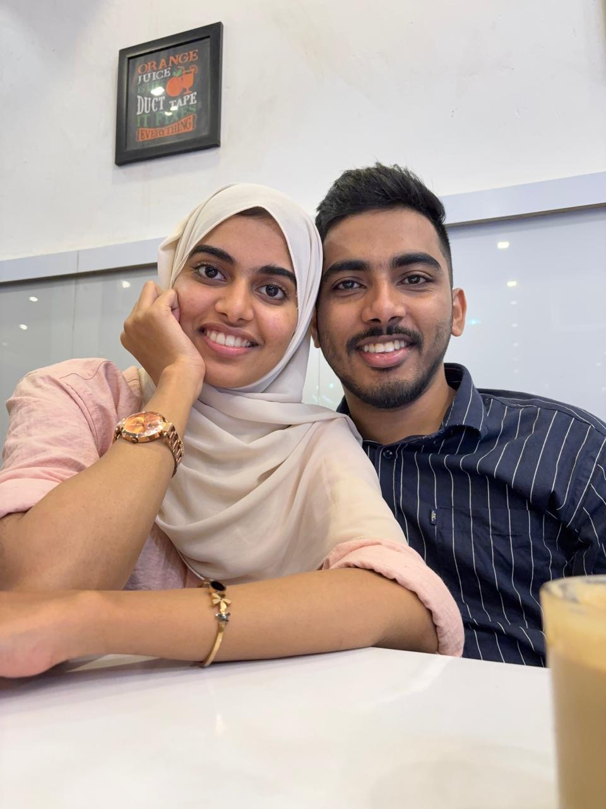
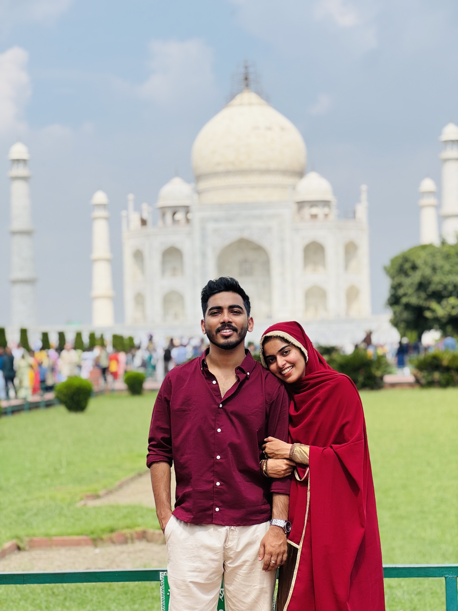
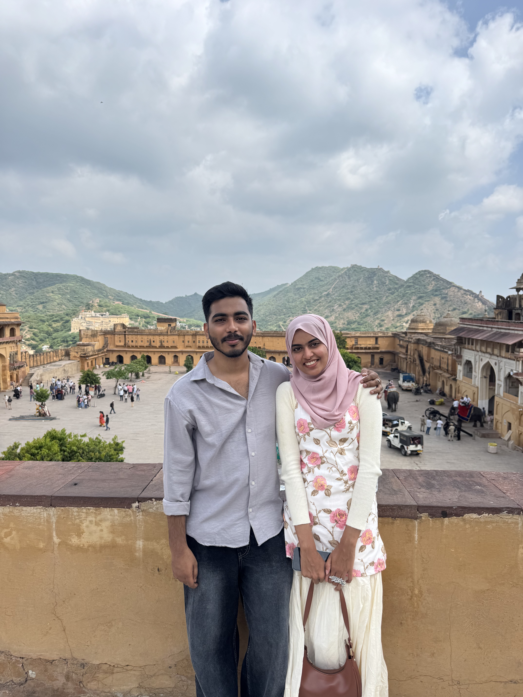
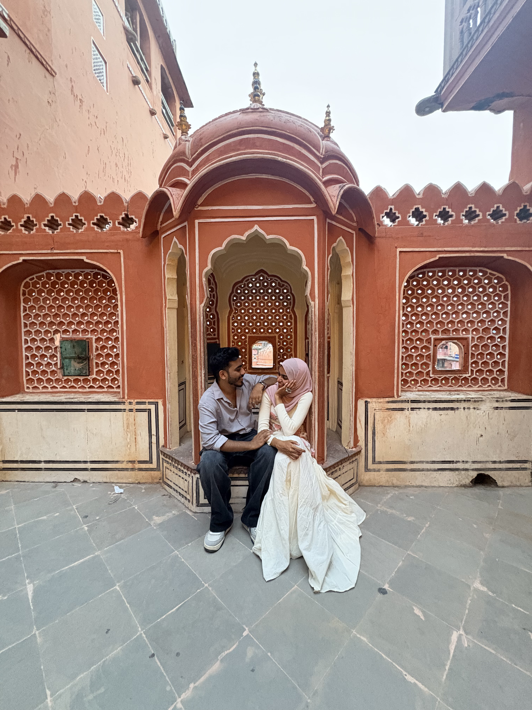
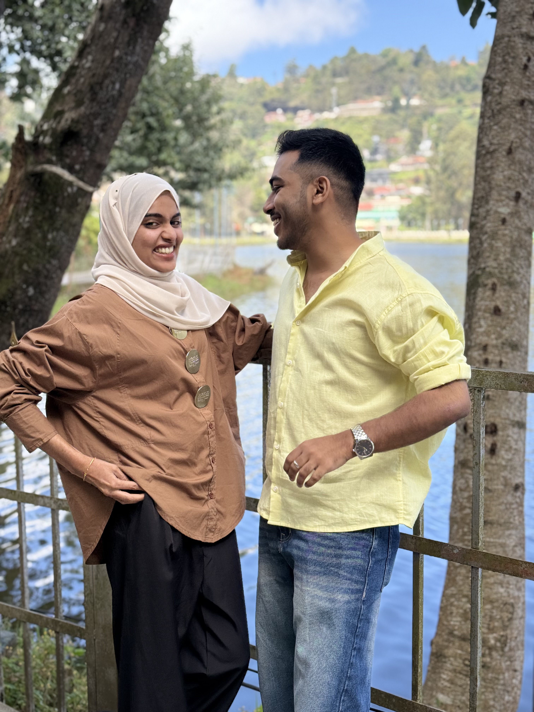
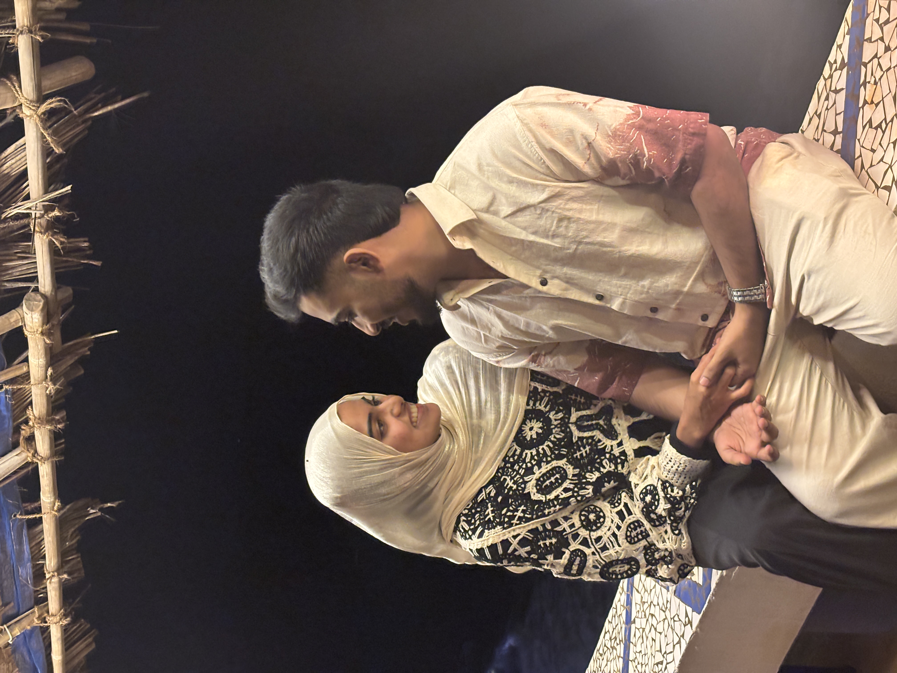
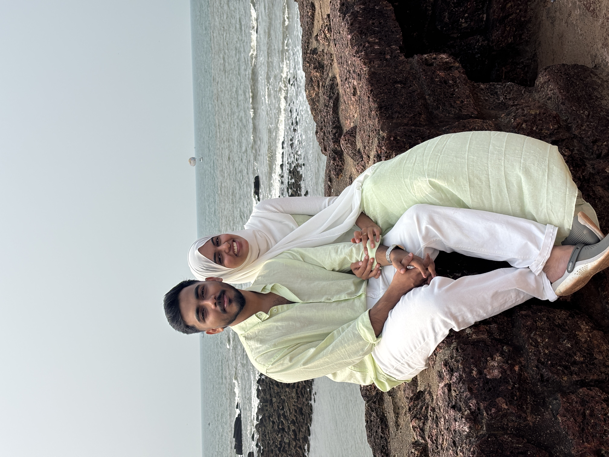
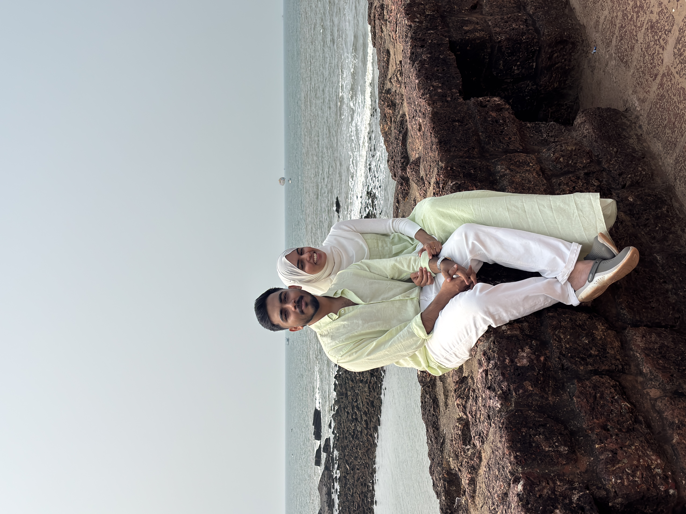

📸 Our Memories

















This little world is made with all my love, just for you
I fell in love with you not just in the big moments, but in the quiet, ordinary ones that became extraordinary because of you.
I love the way we sit together over food — how you confidently order so much, yet end up eating so little, smiling softly as you push the rest toward me. Finishing your plate feels like a privilege, a silent promise that we share even the smallest things in life. Those moments, just us at a table, feel more precious to me than the fanciest dinners in the world.
Every journey with you feels like time slowed down just for us. Traveling together, watching the world pass by while you sit beside me, laughing, talking, dreaming — those are the moments I hold closest to my heart. Being with you makes every road feel warmer, every destination more meaningful.
And when you get angry… I know I become a little dramatic. Not because I enjoy it, but because I can’t stand the distance between us. I’ll joke, tease, exaggerate, do anything just to see your smile return — because your happiness matters more to me than my pride.
I adore how talkative you are. How a simple thought turns into a beautiful fifteen-mark essay, full of expressions, emotions, and stories. I never get tired of listening. Your words feel like home, and your voice is my favorite sound.
In these little habits, these shared laughs, these tiny dramas and long conversations — I found my forever. And every day with you reminds me how lucky I am to love you, and to be loved by you 💕
I choose you. Always.
Forever and always,
Your kakku ❤️